한눈에 보는 숫자
초록은 강점, 빨강은 먼저 고칠 곳입니다.
3먼저 고칠 3가지
약속드린 ‘고칠 방안 3가지’입니다. 돈 들이지 않고 사장님이 직접 하실 수 있는 것부터 골랐습니다.
1구글 ‘폐업’ 옛 등록 정리하고, 맞는 등록을 사장님 것으로
「오빠야횟집 해운대」를 치면 해운대로608번길 36의 ‘오빠야 – 폐업함’(별점 3.6)으로 바로 갑니다. 지금 가게 등록(별점 4.7)은 전화·영업시간·웹사이트가 비어 있습니다.
① 지금 가게 등록에서 「비즈니스 소유권 주장」으로 사장님 계정 등록 → 전화·영업시간·사진·메뉴 넣기 ② 옛 등록은 「수정 제안 → 폐업 또는 이전」으로 새 주소와 묶기
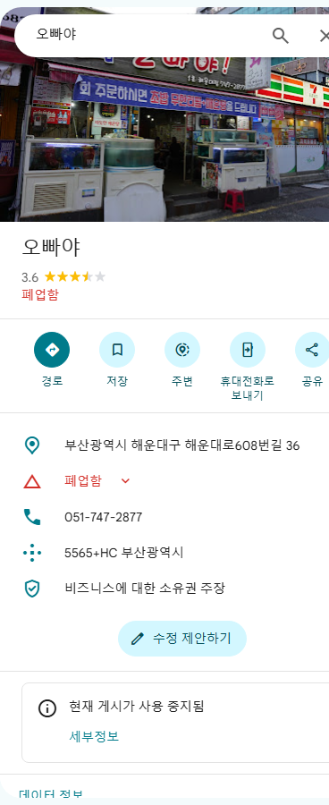
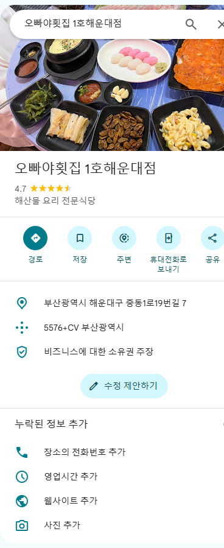
2네이버에 ‘방어회 맛집’이라 뜨는데 메뉴엔 방어가 없어요
네이버 AI 요약은 「방어회 맛집으로 소문난 핫플레이스」인데, 정작 「해운대 방어회」를 검색하면 오빠야횟집은 위 10곳에 없습니다(리뷰 591개 가게도 나옴). 메뉴 19개에 방어가 없고 리뷰 메뉴 순위도 매운탕 123·초밥 51·모듬회 45입니다. 방어를 찾아온 손님이 실망할 수 있습니다.
지금 「해운대 횟집」 위쪽 가게들(어가횟집·해적쌀롱)은 ‘대방어’를 첫 사진·인기 메뉴로 걸고 있습니다. 겨울 방어를 실제로 판다면 → 메뉴에 「방어회(겨울)」와 가격을 넣고 소식 한 번. 팔지 않는다면 → 소개글 첫 줄을 진짜 강점(알초밥·매운탕 무한리필, 새벽 6시)으로. 어느 쪽인지 사장님께 여쭙니다.
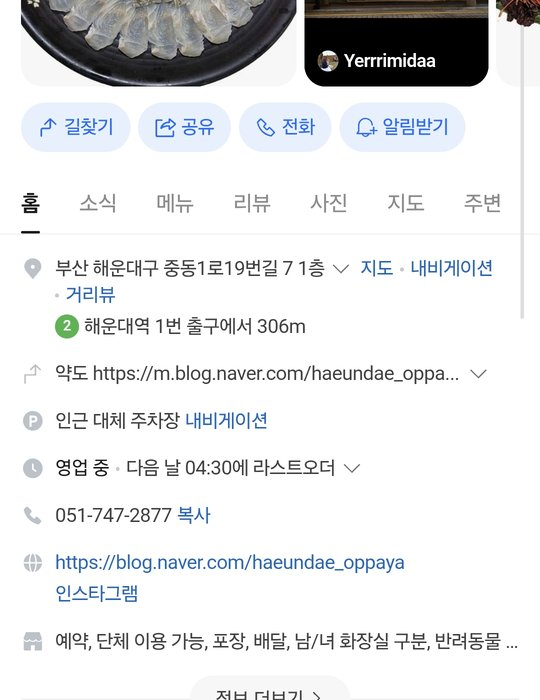
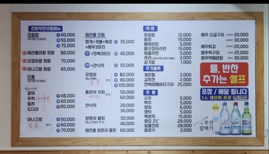
3지도 세 곳의 이름·메뉴를 하나로, 리뷰에 답글
이름이 4가지(네이버 「오빠야횟집 1호해운대점」, 카카오 「오빠야횟집」, 구글 「오빠야」, 간판 「횟집 오빠야」). 카카오는 사장님 등록이 안 돼 메뉴 43개·가격이 네이버와 다르고, 홈페이지 칸이 팔로워 5명 인스타입니다. 최근 리뷰 10개 중 답글 1개.
① 카카오맵 「매장관리」로 사장님 등록 → 이름·메뉴·홈페이지(블로그) 맞추기 ② 네이버 리뷰에 답글(아래 붙여 넣을 글 3가지) ③ 웹명함 주소를 세 지도 홈페이지 칸에 같이
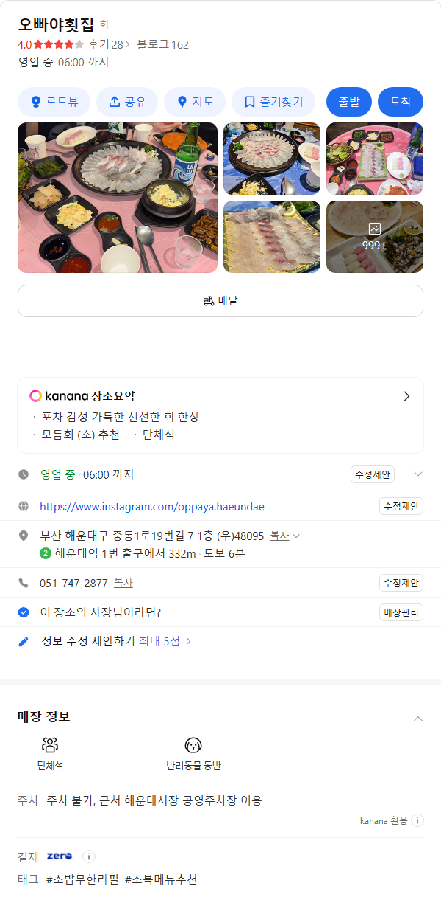
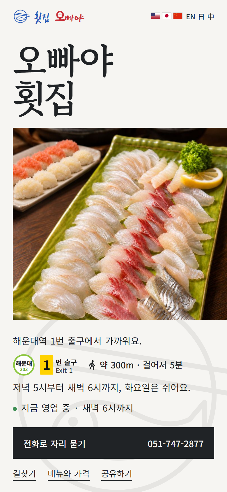
분야별 점수
점수가 낮은 칸 = 돈 들이지 않고 바로 오르는 칸입니다. 손님 평(리뷰)은 이미 좋아서, 가게가 직접 채우는 칸만 채우면 됩니다. 100점 만점, 아래 점검 항목 중 통과한 비율입니다. 물음표는 화면을 더 받아 채웁니다.
지도 세 곳에 적힌 정보
손님과 AI는 이 중 아무거나 봅니다. 카카오맵을 본 손님과 네이버를 본 손님이 서로 다른 이름·메뉴·가격을 보게 됩니다.
휴대폰에서는 표를 옆으로 밀어 보세요 →
| 네이버21012622 | 카카오맵867161847 | 구글 ①폐업 옛 등록 | 구글 ②지금 가게 | |
|---|---|---|---|---|
| 상호 | 오빠야횟집 1호해운대점 | 오빠야횟집 | 오빠야 | 오빠야횟집 1호해운대점 |
| 주소 | 중동1로19번길 7 1층 | 중동1로19번길 7 1층 | 해운대로608번길 36 | 중동1로19번길 7 |
| 전화 | 051-747-2877 | 051-747-2877 | 051-747-2877 | 없음 |
| 영업 | 17:00–다음 날 06:00 · 4:30 라스트오더 · 새벽엔 전화 | 17:00–06:00 · 4:30 라스트오더 | 폐업함 | 없음 |
| 쉬는 날 | 화요일 정기휴무 | 화요일 | — | 없음 |
| 메뉴 | 19개 (11/4 고침) | 43개 (밀치 40,000 등 다름) | — | 없음 |
| 리뷰 | 1,647 (방문자 637 · 블로그 1,010) | 별점 4.0 · 후기 28 · 블로그 162 | 3.6 | 4.7 |
| 사장님 등록 | 됨(답글 있음) | 안 됨 | 안 됨 | 안 됨 |
| 홈페이지 칸 | 블로그 haeundae_oppaya | 인스타(팔로워 5) | — | 없음 |
인공지능 검색(AI)에 10가지를 물어봤습니다
손님이 실제로 칠 만한 질문을 Claude 웹 검색에 던졌습니다(2026-11-20). 같은 질문으로 고친 뒤 다시 잽니다.
검색어 3개, 누가 위에 있나
손님이 네이버에서 검색어 3개를 쳤을 때 보이는 가게 목록입니다(휴대폰 화면).
| 검색어 | 오빠야횟집 | 위 가게들의 공통점 |
|---|---|---|
| 해운대 횟집 | 없음 (광고 빼고 위 9곳) | 9곳 중 7곳 네이버 예약 |
| 해운대 방어회 | 없음 (광고 빼고 위 10곳) | 첫 사진·메뉴·리뷰에 ‘대방어’ |
| 해운대역 횟집 | 6번째 | 위 5곳 중 4곳 예약 단추 |
| 중동 횟집 외 2개 | 확인 못 함 | — |
「해운대 횟집」 — 광고 빼고 위에서부터
2026년 11월 20일 밤, 휴대폰 네이버 검색. 광고 7곳(광안리 산해횟집·해동횟집·원조기장대게·수달바·미포1호 랍스타포차·청미가·부산반다찌)은 빼고 셌습니다.
리뷰 수가 거의 같은 어가횟집(1,645)·봄봄횟집(1,654)은 보이는데 오빠야횟집(1,647)은 안 보입니다. 리뷰 수보다 예약·톡톡·쿠폰 표시, 소식, 소개글 같은 ‘가게가 관리하는 칸’ 차이가 큽니다. 위 9곳 중 7곳에 네이버 예약이 붙어 있습니다.
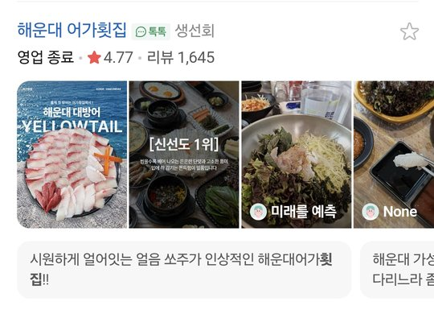
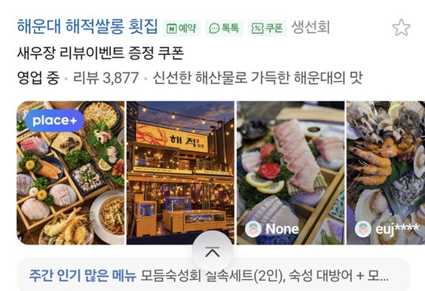
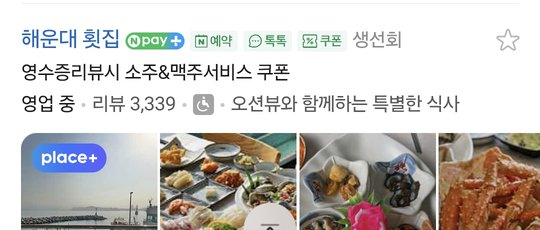
「해운대 방어회」 — 광고 빼고 위에서부터
2026년 11월 20일 밤, 휴대폰 네이버 검색. 광고 2곳(광안리 산해횟집·새바다횟집)은 빼고 셌습니다.
네이버 요약은 오빠야횟집을 ‘방어회 맛집’이라 하는데, 정작 「해운대 방어회」 검색에는 안 나옵니다. 리뷰 591개 섬진강횟집도 나옵니다. 위 가게들은 첫 사진·메뉴·리뷰에 ‘방어’가 보입니다. 오빠야횟집은 메뉴·사진·소개글 어디에도 방어가 없습니다.
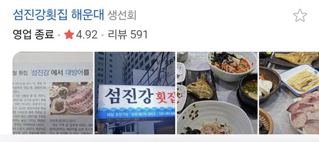
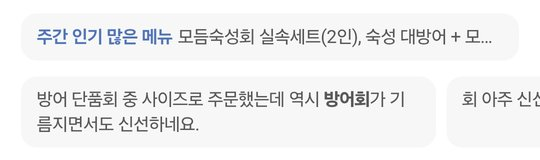
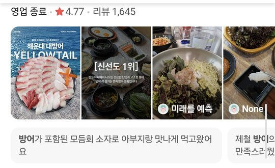
「해운대역 횟집」 — 광고 빼고 위에서부터
2026년 11월 20일 밤, 휴대폰 네이버 검색. 광고 4곳은 빼고 셌습니다. 여기서는 오빠야횟집이 6번째로 나옵니다.
역 가까운 가게를 찾는 검색엔 잡히지만, 더 많이 치는 「해운대 횟집」과 지금 철인 「해운대 방어회」에는 못 들어갑니다. 위 5곳 중 4곳에 「예약」 단추가 있습니다.
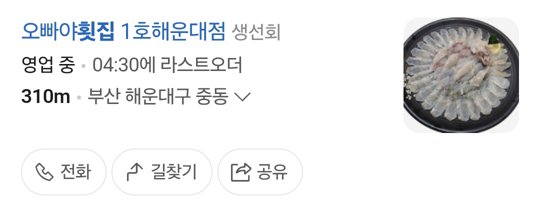
「중동 횟집」「해운대 회 포장」「해운대 새벽 횟집」은 이번에 확인하지 못했습니다.
손님이 남긴 말
리뷰는 이 가게의 가장 큰 재산입니다. 손님이 고른 말과 많이 적은 메뉴를 그대로 셌습니다.
좋았던 점 (참여 390명)
이 말을 소개글·소식에 그대로 쓰면 됩니다.
리뷰에 많이 나온 메뉴
매운탕이 모듬회보다 3배 가까이 많이 나옵니다. 방어는 없습니다.
네이버에서 직접 본 화면
휴대폰으로 받은 네이버 플레이스 화면입니다(2026년 11월 20일 밤).
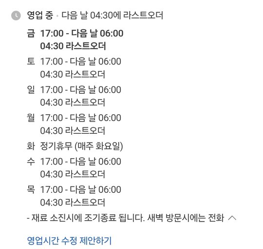
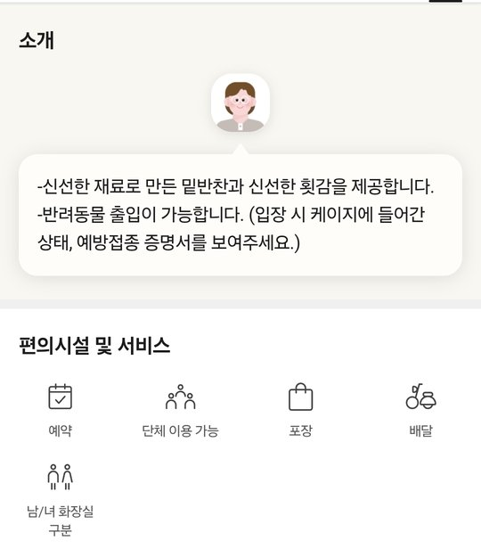
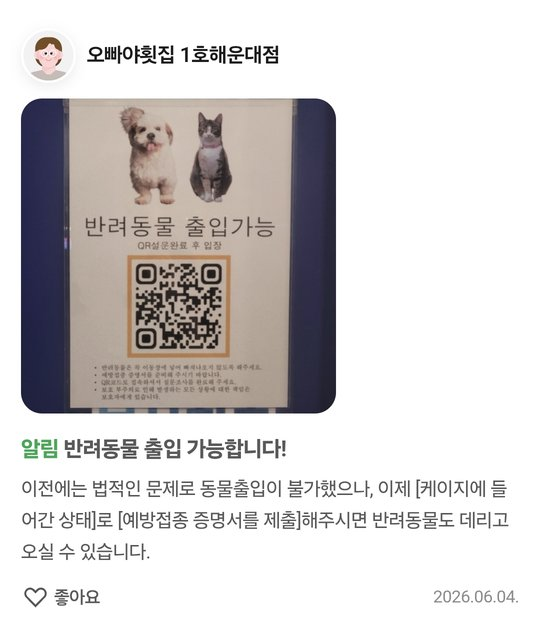
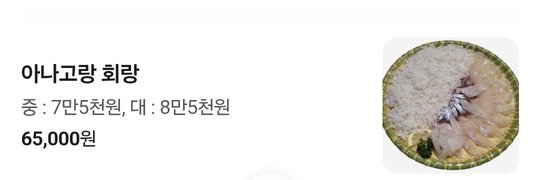
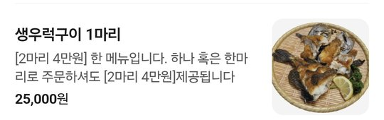
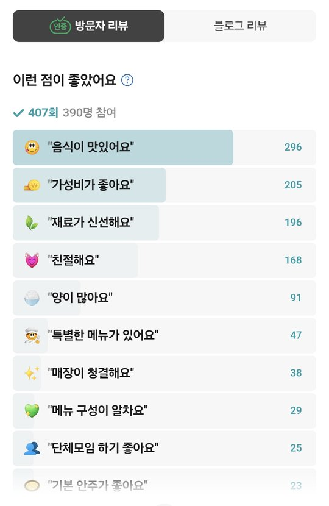
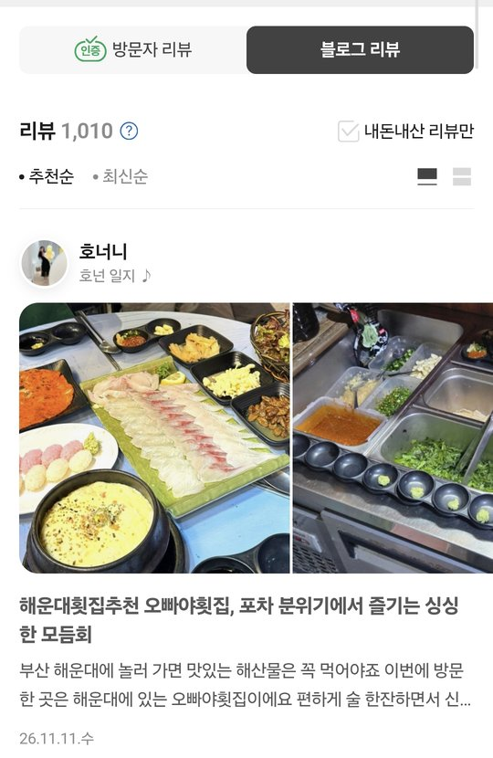
분야별 점검 내역
항목을 누르면 펼쳐집니다. 화살표 줄이 고치는 방법입니다.
네이버 플레이스14개 중 5개 통과 ›
손님 후기가 꾸준히 쌓이고 있습니다. 가장 큰 강점입니다.
소개글·소식에 그대로 쓸 수 있는 손님의 말입니다.
‘가격 변동’ 없이 정가가 있어 손님이 고르기 쉽습니다.
약도 글까지 적혀 있습니다.
상차림·가게 분위기가 첫 화면에서 잘 안 보입니다.
손님 기대와 실제가 어긋날 수 있습니다.
대표 메뉴·무한리필·새벽 6시·역에서 5분이 빠져 있습니다. AI 요약은 소개글을 많이 가져갑니다.
소식이 멈춘 가게는 검색에서 덜 보입니다.
답글은 다시 오는 손님과 검색 둘 다에 좋습니다.
아나고랑 회랑: 설명 「중 7만5천, 대 8만5천」인데 가격 65,000원 / 해산물모듬 소·중·대 설명이 세 칸에 똑같이 / 생우럭구이 「1마리 25,000원」인데 「2마리 4만원만」
「해운대 횟집」 검색 위 9곳 중 7곳에 네이버 예약이 붙어 있습니다. 오빠야횟집 첫 화면 단추는 길찾기·공유·전화·알림받기뿐입니다.
리뷰 수가 비슷한 어가횟집(1,645)·봄봄횟집(1,654)은 보입니다.
카카오와 쉬는 날이 같습니다.
관리 화면에서만 보여 사장님께 여쭙니다.
지도 3곳 정보 일치6개 중 2개 통과 ›
세 곳 모두 핀이 있습니다.
가게 이름 검색이 이곳으로 갑니다.
외국인 손님이 주로 쓰는 지도입니다.
가격이 다르게 보이면 손님이 헷갈립니다.
들어가도 볼 것이 적습니다.
구글 지금 가게 등록에만 영업시간이 없습니다.
AI 검색3개 중 0개 통과 ›
AI는 polle·식신 같은 남의 페이지를 근거로 답합니다.
네이버 플레이스 내용은 AI가 거의 못 읽습니다.
polle 한 건이 가게 평판처럼 쓰입니다.
소식·콘텐츠4개 중 1개 통과 ›
손님이 알아서 글을 써 주고 있습니다.
가게 쪽에서 내는 소식이 없습니다.
소개에 주소·단체예약·영업시간은 잘 적혀 있습니다.
화면 받아 채웁니다.
고치는 순서
위에서부터 하나씩. 체크하면서 쓰시면 됩니다.
이번 주
- 구글 지금 가게 등록 소유권 주장 + 전화·영업시간
- 구글 옛 ‘폐업’ 등록에 수정 제안
- 방어 판매 여부 정해서 메뉴 또는 소개글 고치기
- 밀린 리뷰 답글 10개
2주 안
- 카카오맵 매장관리 등록 → 이름·메뉴·홈페이지 맞추기
- 네이버 소개글·대표 키워드 바꾸기(아래 글)
- 웹명함 주소를 세 지도 홈페이지 칸에
- 네이버 소식 첫 글(무한리필 안내)
한 달 안
- 리뷰 답글 매주 이어가기
- 소식·인스타 한 달 4번
- polle·식신 옛 가격 수정 요청
- 같은 질문으로 AI·검색 다시 재 보기
바로 붙여 넣을 글
[복사] 누르고 그대로 붙여 넣으세요. 가게에 맞지 않는 말은 빼셔도 됩니다.
네이버 소개글 (첫 문장이 AI 요약에 쓰여요)
오빠야횟집 1호 해운대점은 해운대역 1번 출구에서 걸어서 5분, 저녁 5시부터 새벽 6시까지 여는 횟집입니다. 회를 시키시면 알초밥과 매운탕을 무한으로 드리고, 계란찜·김치전이 기본으로 나옵니다. 대표 메뉴는 광어·밀치·도다리·우럭 모듬회(소 40,000원부터), 해산물이랑 회랑, 새우소금구이입니다. 단체석·포장·배달·반려동물 동반이 되고, 혼자 오셔도 드실 수 있어요.
대표 키워드 5개 (지금 걸린 키워드와 비교해 고르세요)
해운대횟집, 해운대역횟집, 해운대새벽횟집, 해운대가성비횟집, 중동횟집
리뷰 답글 ① 맛·가성비 칭찬
맛있게 드셔 주셔서 감사합니다! 알초밥이랑 매운탕은 언제든 더 말씀만 주세요. 해운대역 근처 오시면 또 들러 주세요 :)
리뷰 답글 ② 친절 칭찬
바쁜 시간에 와 주셨는데 좋게 봐 주셔서 감사합니다. 다음에도 편하게 드시고 가실 수 있게 챙겨 드릴게요!
리뷰 답글 ③ 아쉬운 점
말씀 주셔서 감사합니다. 말씀하신 부분은 바로 살펴보겠습니다. 다음에 오시면 더 만족하실 수 있게 준비하겠습니다.
네이버 소식 첫 글
[안내] 회 시키시면 알초밥 + 매운탕 무한리필! 모듬회 하나만 시켜도 계란찜·김치전이 기본으로 나가요. 저녁 5시 ~ 새벽 6시 (마지막 주문 4시 30분) 새벽 2시 30분 넘어서 오실 땐 전화 먼저 주세요. 051-747-2877
구글 비즈니스 소개 (한국어·영어)
해운대역 1번 출구 5분, 저녁 5시~새벽 6시 횟집. 회 주문 시 알초밥·매운탕 무한리필, 계란찜·김치전 기본. Late-night sashimi house, 5 min from Haeundae Station Exit 1. Open 17:00–06:00. Rice balls and spicy fish stew refills free with sashimi.
약속드린 웹 명함(시안)
세 지도 홈페이지 칸·카톡·인스타에 똑같이 거는 가게 페이지입니다.
- 3초 안에: 무슨 집(회 한 상 사진) · 무엇이 좋은지(알초밥·매운탕 무한리필) · 어떻게 가는지(해운대역 1번 출구 5분)
- 지금 영업 중인지 시간에 맞춰 자동으로 바뀜(새벽 4:30 주문 마감 표시)
- 전화 한 번에 걸기, 네이버 지도·카카오맵 길찾기, 주소 복사
- 회 시키면 함께 나오는 것(알초밥·매운탕·계란찜·전)과 대표 메뉴를 사진으로
- 전체 메뉴 19개 가격 + 영어·일본어·중국어 메뉴
웹 명함 화면 더 보기 (휴대폰 화면 캡처)
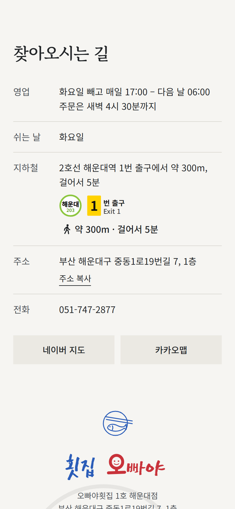
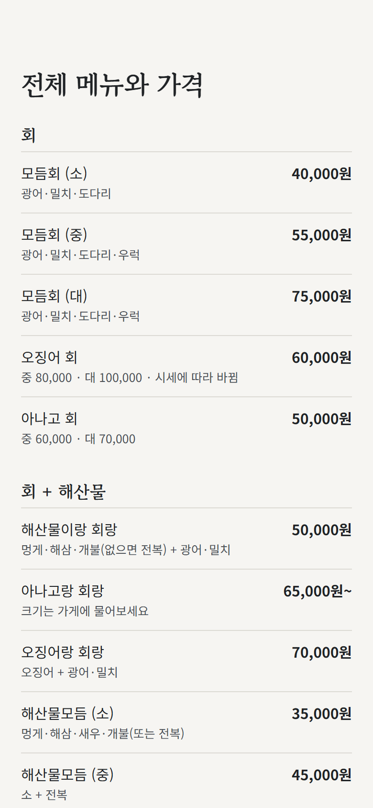
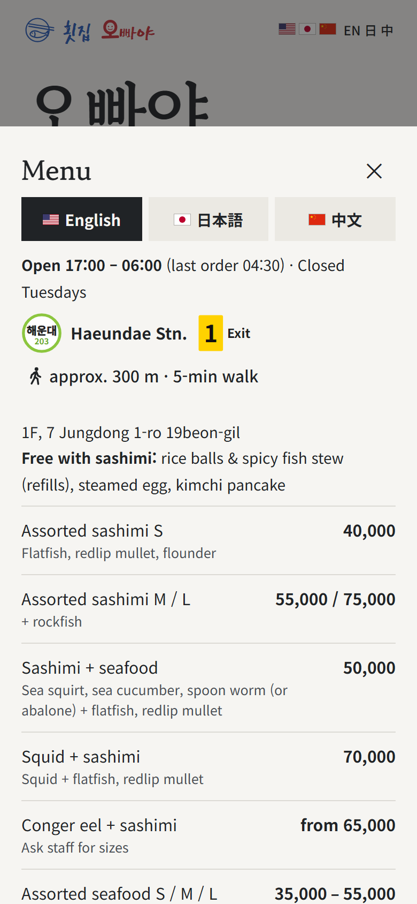
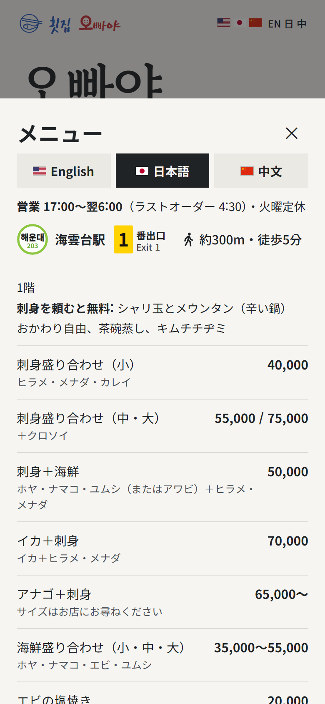
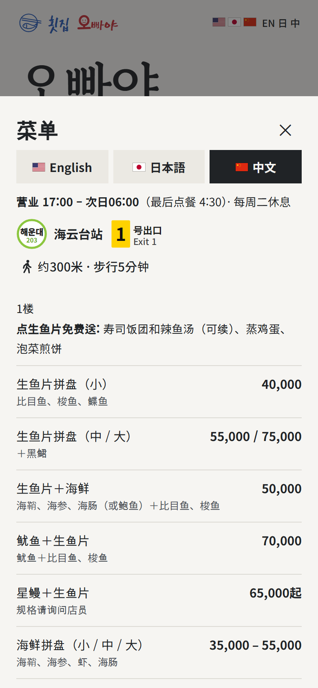
사장님께 받으면 더 정확해지는 것
아래는 사장님만 볼 수 있거나 아시는 것입니다. 알려 주시면 숫자와 방안을 더 정확하게 고쳐 드립니다.
손님이 어떤 검색어로 들어왔는지, 하루 방문·전화·길찾기 수 — 바깥에서는 볼 수 없는 진짜 숫자입니다.
켤 수 있는지, 이미 신청했다가 꺼 둔 것인지.
혹시 예전에 등록한 계정이 있는지(있으면 그 계정으로 고치는 게 빠름).
지금 걸린 키워드를 알려 주시면 아래 추천 키워드와 맞춰 드립니다.
판다면 메뉴·사진에 넣고, 아니면 소개글에서 방어 인상을 지웁니다.
간판의 SINCE 2013이 맞다면 ‘해운대 13년’을 소개글에 쓸 수 있습니다.
조사 방법 · 확인 못 한 것
2026년 11월 20~21일, 로그인하지 않은 화면과 휴대폰 화면 캡처로 봤습니다. 네이버 플레이스·카카오맵·구글 지도·인스타그램 공개 화면, 그리고 Claude 웹 검색에 손님이 칠 만한 질문 10개를 던져 AI 답을 기록했습니다. 숫자는 본 날짜 기준이고, 화면 캡처는 아래 사진과 원본 폴더에 있습니다.
- 검색 순위: 「중동 횟집」「해운대 회 포장」「해운대 새벽 횟집」 — 이번엔 확인 못 함
- 네이버 대표 키워드 — 관리 화면에서만 보임
- 가게 블로그 haeundae_oppaya 글 수·최근 글 날짜
- 인스타 최근 게시일 — 로그인 없이 보이지 않음
- 월 검색량 — 네이버 검색광고 키워드 도구가 필요해 이번엔 재지 않음